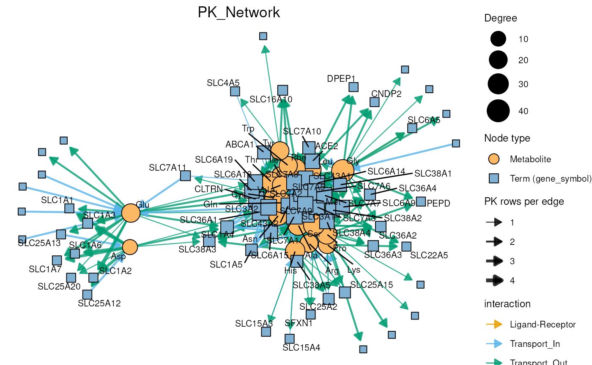

Plot measured metabolites together with the prior knowledge (PK) terms they
are linked to, e.g. proteins from metsigdb_metalinks(), pathways from
metsigdb_kegg() or cancer types from metsigdb_macdb(). Every link
between a metabolite and a term in input_pk becomes an edge.
Usage
viz_pk_network(
feature_metadata,
input_pk,
metadata_info,
term_metadata = NULL,
id_type = "HMDB",
id_sep = ";",
label_mode = c("reduced", "all"),
label_max_chars = 20,
label_degree_min = 2,
label_repel = TRUE,
seed = NULL,
layout = "fr",
plot_name = "PK_Network",
save_plot = "svg",
save_table = NULL,
print_plot = TRUE,
path = NULL,
plot_width = 25,
plot_height = 20,
plot_unit = "cm"
)Arguments
- feature_metadata
Data frame with one row per measured feature, holding the ID column and optional label and attribute columns.
- input_pk
Prior knowledge in long format, i.e. one metabolite ID per row, such as the tables returned by the
metsigdb_*()functions.- metadata_info
Named character vector mapping roles to column names:
- InputID
Required. ID column in
feature_metadata.- PriorID
Required. ID column in
input_pk.- PriorTerm
Required. Column in
input_pkwhose values become the term nodes, e.g. "gene_symbol" or "term".- InputLabel
Metabolite label column in
feature_metadata. Without it, or for missing labels, the IDs are used.- MetaboliteColor, MetaboliteSize
Columns in
feature_metadatafor the fill and size of metabolite nodes. Size must be numeric.- TermColor, TermSize
Columns in
term_metadata, or else ininput_pk, for the fill and size of term nodes. Size must be numeric.- EdgeColor, EdgeLinetype, EdgeWidth
Columns in
input_pkfor the colour, line type and width of edges. Width must be numeric; by default it is the number ofinput_pkrows behind an edge.- EdgeDirection
Column in
input_pkholding the edge direction (see Details).
- term_metadata
Optional: Data frame with one row per term, e.g. the result of
cluster_ora(), containing thePriorTermcolumn. Used forTermColorandTermSize. Default = NULL- id_type
Optional:
"HMDB"to normalise HMDB IDs before matching. Any other value (e.g. "KEGG", "PubChem") matches IDs exactly. Default = "HMDB"- id_sep
Optional: Separator of multiple IDs in one cell of the
InputIDcolumn. Default = ";"- label_mode
Optional:
"reduced"labels only nodes with a degree of at leastlabel_degree_min;"all"labels all nodes. Default = "reduced"- label_max_chars
Optional: Labels longer than this are shortened with "...". Default = 20
- label_degree_min
Optional: Minimum degree of labelled nodes if
label_mode = "reduced". Default = 2- label_repel
Optional: If TRUE, labels are repelled from each other. Default = TRUE
- seed
Optional: Seed for random layouts such as "fr". With
NULLthe layout changes between calls. The global random seed is not changed. Default = NULL- layout
Optional: Graph layout passed to
ggraph::ggraph(), e.g. "fr" (force-directed), "kk" or "stress". Default = "fr"- plot_name
Optional: Plot title and name of the saved files. Default = "PK_Network"
- save_plot
Optional: File type of the saved plot: "svg", "pdf", "png" or NULL. Default = "svg"
- save_table
Optional: File type of the saved tables: "csv", "xlsx", "txt" or NULL. Default = NULL
- print_plot
Optional: If TRUE, the plot is printed. Default = TRUE
- path
Optional: Path to the folder the results are saved in. Default = NULL
- plot_width, plot_height, plot_unit
Optional: Size of the saved plot. Default = 25 x 20 cm
Value
A list with
- DF
List of
edges(one row per metabolite-term link with the mapped attributes andn_pk_rows),nodes(one row per node withnode_type,degreeand the mapped attributes),matched_featuresandunmatched_features(the split and normalised feature IDs with or without a match ininput_pk).- Plot
List with the ggraph plot
pk_network, orNULLif no feature matchedinput_pk.
Details
The metabolites in feature_metadata are matched to input_pk by ID. A
cell may hold several IDs separated by id_sep. With id_type = "HMDB",
HMDB IDs are brought into the same 7-digit form on both sides (e.g.
"HMDB00123" and "HMDB0000123" match); all other IDs are matched exactly.
Use translate_id() beforehand if the data and the PK use different ID
types.
Node colours and sizes and edge colours, line types and widths can be
mapped to columns via metadata_info. Numeric columns get a continuous
scale (diverging around 0 if the values have both signs, e.g. Log2FC),
other columns a discrete one. If several rows map to the same node or edge,
numeric values are averaged and otherwise the first non-missing value is
used. Nodes without a size value are drawn at the smallest size.
Edges are undirected unless metadata_info contains EdgeDirection. This
column must hold "to_term" (arrow from metabolite to term) or
"to_metabolite" (arrow from term to metabolite); edges with other values
stay undirected. metsigdb_metalinks() provides such a column,
direction, together with the interaction category interaction.
See also
viz_shared_pk_network() to connect metabolites by the terms
they share; cluster_pk() to connect terms by the metabolites they
share.
Examples
# Biocrates amino acids and the transporters they interact with
data(biocrates_features)
amino_acids <- biocrates_features %>%
dplyr::filter(Class == "Aminoacids") %>%
dplyr::select(TrivialName, HMDB)
aa_hmdb <- trimws(unlist(strsplit(amino_acids$HMDB, ",")))
transporters <- metsigdb_metalinks(
hmdb_ids = aa_hmdb,
save_table = NULL,
exclude_metabolites = NULL
) %>%
dplyr::filter(interaction_family == "Transporter-metabolite")
network <- viz_pk_network(
feature_metadata = amino_acids,
input_pk = transporters,
metadata_info = c(
InputID = "HMDB",
InputLabel = "TrivialName",
PriorID = "hmdb",
PriorTerm = "gene_symbol",
EdgeColor = "interaction",
EdgeDirection = "direction"
),
id_sep = ",",
seed = 1,
save_plot = NULL
)
